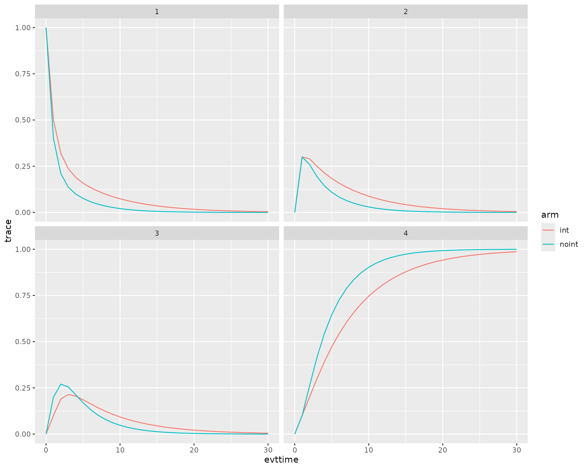

Example for a Markov Model
Javier Sanchez Alvarez and Valerie Aponte Ribero
April 04, 2025
Source:vignettes/articles/example_markov.Rmd
example_markov.RmdIntroduction
This document runs a discrete event simulation model in the context of a simple cohort Markov model with 4 states. Note that this same exercise could be done from a patient simulation approach (microsimulation) rather than the cohort one.
Main options
library(WARDEN)
library(dplyr)
#>
#> Attaching package: 'dplyr'
#> The following objects are masked from 'package:stats':
#>
#> filter, lag
#> The following objects are masked from 'package:base':
#>
#> intersect, setdiff, setequal, union
library(ggplot2)
library(kableExtra)
#>
#> Attaching package: 'kableExtra'
#> The following object is masked from 'package:dplyr':
#>
#> group_rows
library(purrr)
#Show all numbers, no scientific notation
options(scipen = 999)Model Concept
The model is a simple Markov model with 4 states whose transition matrix can be found below. In order to run a pure Markov model within these functions, we will define each event as each cycle. We will generate an initial trace and at each event (cycle) we will update the trace by multiplying it by the transition matrix. Costs and QALYs can be computed in a similar fashion by multiplying the trace times the cost and the utility.
Load Data
The dummy data is generated below. The data structure should be as defined below, otherwise it will give problems.
#Utilities
util.data <- data.frame( name = c("util1" ,"util2" ,"util3" ,"util4"),
value = c(0.9,0.75,0.6,0),
se=rep(0.02,4),
stringsAsFactors = FALSE
)
#Costs
cost.data <- data.frame( name = c("cost1" ,"cost2" ,"cost3" ,"cost4","cost_int"),
value = c(1000,3000,6000,0,1000),
stringsAsFactors = FALSE
) %>%
mutate(se= value/5)General inputs with delayed execution
Initial inputs and flags that will be used in the model can be
defined below. We can define inputs that are common to all patients
(common_all_inputs) within a simulation, inputs that are
unique to a patient independently of the treatment (e.g. natural death,
defined in common_pt_inputs), and inputs that are unique to
that patient and that treatment (unique_pt_inputs). Items
can be included through the add_item function, and can be
used in subsequent items. All these inputs are generated before the
events and the reaction to events are executed. Furthermore, the program
first executes common_all_inputs, then
common_pt_inputs and then unique_pt_inputs. So
one could use the items generated in common_all_inputs in
unique_pt_inputs.
We also define here the specific utilities and costs that will be
used in the model. It is strongly recommended to assign unnamed objects
if they are going to be processed in the model. In this case, we’re only
using util_v and cost_v as an intermediate
input and these objects will not be processed (we just use them to make
the code more readable), so it’s fine if we name them.
We define here our initial trace, the number of cycles to be simulated, the transition matrices and the initial cycle time (i.e. 0).
It is important to note that the QALYs and Costs used are of length 1. If they were of length > 1, the model would expand the data, so instead of having each event as a row, the event would have 4 rows (1 per state). This means more processing of the results data would be needed in order for it to provide the correct results.
#Put objects here that do not change on any patient or intervention loop, for example costs and utilities
common_all_inputs <- add_item(max_n_cycles = 30) %>%
add_item( #utilities
pick_val_v(base = util.data$value,
psa = pick_psa(rep("rbeta_mse",nrow(util.data)),rep(1,nrow(util.data)),util.data$value,util.data$se),
sens = util.data$value,
psa_ind = psa_bool,
sens_ind = sensitivity_bool,
indicator = rep(0, nrow(util.data)),
names_out = util.data[,"name"]
)
) %>%
add_item( #costs
pick_val_v(base = cost.data$value,
psa = pick_psa(rep("rgamma_mse",nrow(cost.data)),rep(1,nrow(cost.data)),cost.data$value,cost.data$se),
sens = cost.data$value,
psa_ind = psa_bool,
sens_ind = sensitivity_bool,
indicator = rep(0, nrow(cost.data)),
names_out = cost.data[,"name"]
)
)
#Put objects here that change as we loop through treatments for each patient (e.g. events can affect fl.tx, but events do not affect nat.os.s)
#common across arm but changes per pt could be implemented here (if (arm==)... )
unique_pt_inputs <- add_item(
trace = c(1,0,0,0), #initialize trace, everyone at state 1
transition = if( arm=="noint"){
matrix(c(0.4,0.3,0.2,0.1,
0.1,0.4,0.3,0.2,
0.1,0.1,0.5,0.3,
0,0,0,1),nrow=4,byrow=T)
} else{
matrix(c(0.5,0.3,0.1,0.1,
0.2,0.4,0.3,0.1,
0.1,0.2,0.5,0.2,
0,0,0,1),nrow=4,byrow=T)
}, # In this case we have two different matrices, note this could also be a single matrix using symbolic RRs or similar
#Alternative approach
# rr = ifelse(arm=="noint",1,0.9),
# transition_2 = matrix(c(0.4,0.3,0.2,0.1,
# 0.1,0.4,0.3,0.2,
# 0.1,0.1,0.5,0.3,
# 0,0,0,1),nrow=4,byrow=T) * rr,
# transition_2 = cbind(1-rowSums(transition_2[,-1]),transition_2[,-1]) ,
cycle_time = 0,
q_default = trace %*% c(util1,util2,util3,util4), #utilities weighted by state to get QALY
c_default = if(arm=="noint"){
trace %*% c(cost1+ cost_int,cost2+ cost_int,cost3+ cost_int,cost4)
} else{
trace %*% c(cost1,cost2,cost3,cost4)
}
)Events
Add Reaction to Those Events
The explanation on how these part works can be seen in any of the other models.
In this Markov model case, in the event start we
generate as many cycles as we need. At each cycle event we
update the time of the cycle to keep track of it when we produce the
output of the model and we update the trace. Finally, when all the
events are over, we finish the simulation by setting
curtime to infinity.
Alternatively, we could just use the start event and iterate over each cycle, saving everything into an array. That alternative option is not described here as it would involve some tweaking after running the model (as we would not be using the time dimension, so e.g., the discounting would be assuming previous time of 0 and current time of 0 instead of a vector of times, so the results would require post-processing to be adequate).
evt_react_list <-
add_reactevt(name_evt = "start",
input = {
for (i in 2:max_n_cycles) {
new_event(list("cycle" = curtime + i))
}
}) %>%
add_reactevt(name_evt = "cycle",
input = {
modify_item_seq(list(
q_default = trace %*% c(util1,util2,util3,util4),
c_default = if(arm=="noint"){
trace %*% c(cost1+ cost_int,cost2+ cost_int,cost3+ cost_int,cost4)
} else{
trace %*% c(cost1,cost2,cost3,cost4)
},
cycle_time = cycle_time + 1,
trace = trace %*% transition #or transition_2
))
if (max_n_cycles == cycle_time) {
modify_item(list(curtime = Inf)) #Indicate end of simulation for patient
}
}) Costs and Utilities
Costs and utilities are introduced below. However, it’s worth noting that the model is able to run without costs or utilities.
Model
Model Execution
The model can be run using the function run_sim below.
We must define the number of patients to be simulated, the number of
simulations, whether we want to run a PSA or not, the strategy list, the
inputs, events and reactions defined above, utilities, costs and also if
we want any extra output and the level of ipd data desired to be
exported.
It is worth noting that the psa_bool argument does not
run a PSA automatically, but is rather an additional input/flag of the
model that we use as a reference to determine whether we want to use a
deterministic or stochastic input. As such, it could also be defined in
common_all_inputs as the first item to be defined, and the
result would be the same. However, we recommend it to be defined in
run_sim.
Note that the distribution chosen, the number of events and the
interaction between events can have a substantial impact on the running
time of the model. Since we are taking a cohort approach, we just need
to indicate npats = 1.
#Logic is: per patient, per intervention, per event, react to that event.
results <- run_sim(
npats=1, # number of patients, recommended to set to 1000 if using PSA as it takes quite a while
n_sim=1, # if >1, then PSA, otherwise deterministic
psa_bool = FALSE,
arm_list = c("int", "noint"), # intervention list
common_all_inputs = common_all_inputs, # inputs common that do not change within a simulation
unique_pt_inputs = unique_pt_inputs, # inputs that change within a simulation between interventions
init_event_list = init_event_list, # initial event list
evt_react_list = evt_react_list, # reaction of events
util_ongoing_list = util_ongoing,
cost_ongoing_list = cost_ongoing,
input_out = c( # list of additional outputs (Flags, etc) that the user wants to export for each patient and event
"trace",
"cycle_time"
)
)
#> Analysis number: 1
#> Simulation number: 1
#> Time to run simulation 1: 0.07s
#> Time to run analysis 1: 0.07s
#> Total time to run: 0.07sPost-processing of Model Outputs
Summary of Results
Once the model has been run, we can use the results and summarize
them using the summary_results_det to print the results of
the last simulation (if nsim=1, it’s the deterministic case), and
summary_results_sim to show the PSA results (with the
confidence intervals). We can also use the individual patient data
generated by the simulation, which we collect here in the
psa_ipd object. Note that the data for life years is wrong,
as the model assumes we are running a patient simulation data and
therefore it’s adding the 4 states together, inflating the total life
years. We can manually adjust this to get the correct life years. Note
that the trace data is exported separately as it’s of length > 1.
summary_results_det(results[[1]][[1]]) #will print the last simulation!
#> int noint
#> costs 18957.73 20353.56
#> dcosts 0.00 -1395.83
#> lys 19.89 19.89
#> dlys 0.00 0.00
#> qalys 5.81 4.37
#> dqalys 0.00 1.44
#> ICER NA -Inf
#> ICUR NA -971.07
#> INMB NA 73266.50
#> costs_undisc 23836.54 23677.54
#> dcosts_undisc 0.00 159.00
#> lys_undisc 30.00 30.00
#> dlys_undisc 0.00 0.00
#> qalys_undisc 6.92 4.90
#> dqalys_undisc 0.00 2.02
#> ICER_undisc NA Inf
#> ICUR_undisc NA 78.75
#> INMB_undisc NA 100797.64
#> c_default 18957.73 20353.56
#> dc_default 0.00 -1395.83
#> c_default_undisc 23836.54 23677.54
#> dc_default_undisc 0.00 159.00
#> cycle_time 30.00 30.00
#> dcycle_time 0.00 0.00
#> q_default 5.81 4.37
#> dq_default 0.00 1.44
#> q_default_undisc 6.92 4.90
#> dq_default_undisc 0.00 2.02
psa_ipd <- bind_rows(map(results[[1]], "merged_df"))
traces <- data.table::rbindlist(results[[1]][[1]]$extradata_raw)
trace_t <- cbind(traces,
psa_ipd[rep(seq(1, nrow(psa_ipd)), each = 4)]) %>%
mutate(state = rep(seq(1:4),62))
trace_t[1:10,] %>%
kable() %>%
kable_styling(bootstrap_options = c("striped", "hover", "condensed", "responsive"))| trace | evtname | evttime | prevtime | pat_id | arm | total_lys | total_qalys | total_costs | total_costs_undisc | total_qalys_undisc | total_lys_undisc | lys | qalys | costs | lys_undisc | qalys_undisc | costs_undisc | cycle_time | c_default | q_default | c_default_undisc | q_default_undisc | nexttime | simulation | sensitivity | state |
|---|---|---|---|---|---|---|---|---|---|---|---|---|---|---|---|---|---|---|---|---|---|---|---|---|---|---|
| 1.00 | start | 0 | 0 | 1 | int | 19.893 | 5.807921 | 18957.73 | 23836.54 | 6.920913 | 30 | 0.9853651 | 0.8868286 | 985.3651 | 1 | 0.900 | 1000 | 0 | 985.3651 | 0.8868286 | 1000 | 0.900 | 1 | 1 | 1 | 1 |
| 0.00 | start | 0 | 0 | 1 | int | 19.893 | 5.807921 | 18957.73 | 23836.54 | 6.920913 | 30 | 0.9853651 | 0.8868286 | 985.3651 | 1 | 0.900 | 1000 | 0 | 985.3651 | 0.8868286 | 1000 | 0.900 | 1 | 1 | 1 | 2 |
| 0.00 | start | 0 | 0 | 1 | int | 19.893 | 5.807921 | 18957.73 | 23836.54 | 6.920913 | 30 | 0.9853651 | 0.8868286 | 985.3651 | 1 | 0.900 | 1000 | 0 | 985.3651 | 0.8868286 | 1000 | 0.900 | 1 | 1 | 1 | 3 |
| 0.00 | start | 0 | 0 | 1 | int | 19.893 | 5.807921 | 18957.73 | 23836.54 | 6.920913 | 30 | 0.9853651 | 0.8868286 | 985.3651 | 1 | 0.900 | 1000 | 0 | 985.3651 | 0.8868286 | 1000 | 0.900 | 1 | 1 | 1 | 4 |
| 0.50 | cycle | 1 | 0 | 1 | int | 19.893 | 5.807921 | 18957.73 | 23836.54 | 6.920913 | 30 | 0.9566652 | 0.8609987 | 956.6652 | 1 | 0.900 | 1000 | 1 | 956.6652 | 0.8609987 | 1000 | 0.900 | 2 | 1 | 1 | 1 |
| 0.30 | cycle | 1 | 0 | 1 | int | 19.893 | 5.807921 | 18957.73 | 23836.54 | 6.920913 | 30 | 0.9566652 | 0.8609987 | 956.6652 | 1 | 0.900 | 1000 | 1 | 956.6652 | 0.8609987 | 1000 | 0.900 | 2 | 1 | 1 | 2 |
| 0.10 | cycle | 1 | 0 | 1 | int | 19.893 | 5.807921 | 18957.73 | 23836.54 | 6.920913 | 30 | 0.9566652 | 0.8609987 | 956.6652 | 1 | 0.900 | 1000 | 1 | 956.6652 | 0.8609987 | 1000 | 0.900 | 2 | 1 | 1 | 3 |
| 0.10 | cycle | 1 | 0 | 1 | int | 19.893 | 5.807921 | 18957.73 | 23836.54 | 6.920913 | 30 | 0.9566652 | 0.8609987 | 956.6652 | 1 | 0.900 | 1000 | 1 | 956.6652 | 0.8609987 | 1000 | 0.900 | 2 | 1 | 1 | 4 |
| 0.32 | cycle | 2 | 1 | 1 | int | 19.893 | 5.807921 | 18957.73 | 23836.54 | 6.920913 | 30 | 0.9288012 | 0.6826689 | 1857.6023 | 1 | 0.735 | 2000 | 2 | 1857.6023 | 0.6826689 | 2000 | 0.735 | 3 | 1 | 1 | 1 |
| 0.29 | cycle | 2 | 1 | 1 | int | 19.893 | 5.807921 | 18957.73 | 23836.54 | 6.920913 | 30 | 0.9288012 | 0.6826689 | 1857.6023 | 1 | 0.735 | 2000 | 2 | 1857.6023 | 0.6826689 | 2000 | 0.735 | 3 | 1 | 1 | 2 |
life_years <- trace_t %>%
group_by(arm) %>%
filter(state!=4) %>% #erase death state for LY computation
mutate(ly_final = lys*lag(trace,3L)) %>% #multiply by previous trace
summarise(ly_final = sum(ly_final,na.rm = TRUE)) #get final discounted life years
life_years %>%
kable() %>%
kable_styling(bootstrap_options = c("striped", "hover", "condensed", "responsive"))| arm | ly_final |
|---|---|
| int | 6.307582 |
| noint | 4.530843 |
results[[1]][[1]][["total_lys"]][["int"]] <- life_years$ly_final[life_years$arm=="int"]
results[[1]][[1]][["total_lys"]][["noint"]] <- life_years$ly_final[life_years$arm=="noint"]
summary_results_det(results[[1]][[1]]) #will print the last simulation!
#> int noint
#> costs 18957.73 20353.56
#> dcosts 0.00 -1395.83
#> lys 6.31 4.53
#> dlys 0.00 1.78
#> qalys 5.81 4.37
#> dqalys 0.00 1.44
#> ICER NA -785.61
#> ICUR NA -971.07
#> INMB NA 73266.50
#> costs_undisc 23836.54 23677.54
#> dcosts_undisc 0.00 159.00
#> lys_undisc 30.00 30.00
#> dlys_undisc 0.00 0.00
#> qalys_undisc 6.92 4.90
#> dqalys_undisc 0.00 2.02
#> ICER_undisc NA Inf
#> ICUR_undisc NA 78.75
#> INMB_undisc NA 100797.64
#> c_default 18957.73 20353.56
#> dc_default 0.00 -1395.83
#> c_default_undisc 23836.54 23677.54
#> dc_default_undisc 0.00 159.00
#> cycle_time 30.00 30.00
#> dcycle_time 0.00 0.00
#> q_default 5.81 4.37
#> dq_default 0.00 1.44
#> q_default_undisc 6.92 4.90
#> dq_default_undisc 0.00 2.02We can also check each of the cycles
| evtname | evttime | prevtime | pat_id | arm | total_lys | total_qalys | total_costs | total_costs_undisc | total_qalys_undisc | total_lys_undisc | lys | qalys | costs | lys_undisc | qalys_undisc | costs_undisc | cycle_time | c_default | q_default | c_default_undisc | q_default_undisc | nexttime | simulation | sensitivity |
|---|---|---|---|---|---|---|---|---|---|---|---|---|---|---|---|---|---|---|---|---|---|---|---|---|
| start | 0 | 0 | 1 | int | 19.893 | 5.807921 | 18957.73 | 23836.54 | 6.920913 | 30 | 0.9853651 | 0.8868286 | 985.365150 | 1 | 0.9000000 | 1000.000000 | 0 | 985.365150 | 0.8868286 | 1000.000000 | 0.9000000 | 1 | 1 | 1 |
| cycle | 1 | 0 | 1 | int | 19.893 | 5.807921 | 18957.73 | 23836.54 | 6.920913 | 30 | 0.9566652 | 0.8609987 | 956.665194 | 1 | 0.9000000 | 1000.000000 | 1 | 956.665194 | 0.8609987 | 1000.000000 | 0.9000000 | 2 | 1 | 1 |
| cycle | 2 | 1 | 1 | int | 19.893 | 5.807921 | 18957.73 | 23836.54 | 6.920913 | 30 | 0.9288012 | 0.6826689 | 1857.602318 | 1 | 0.7350000 | 2000.000000 | 2 | 1857.602318 | 0.6826689 | 2000.000000 | 0.7350000 | 3 | 1 | 1 |
| cycle | 3 | 2 | 1 | int | 19.893 | 5.807921 | 18957.73 | 23836.54 | 6.920913 | 30 | 0.9017487 | 0.5586333 | 2101.074467 | 1 | 0.6195000 | 2330.000000 | 3 | 2101.074467 | 0.5586333 | 2330.000000 | 0.6195000 | 4 | 1 | 1 |
| cycle | 4 | 3 | 1 | int | 19.893 | 5.807921 | 18957.73 | 23836.54 | 6.920913 | 30 | 0.8754842 | 0.4633062 | 1988.224557 | 1 | 0.5292000 | 2271.000000 | 4 | 1988.224557 | 0.4633062 | 2271.000000 | 0.5292000 | 5 | 1 | 1 |
| cycle | 5 | 4 | 1 | int | 19.893 | 5.807921 | 18957.73 | 23836.54 | 6.920913 | 30 | 0.8499846 | 0.3865348 | 1755.898257 | 1 | 0.4547550 | 2065.800000 | 5 | 1755.898257 | 0.3865348 | 2065.800000 | 0.4547550 | 6 | 1 | 1 |
| cycle | 6 | 5 | 1 | int | 19.893 | 5.807921 | 18957.73 | 23836.54 | 6.920913 | 30 | 0.8252278 | 0.3233478 | 1506.346069 | 1 | 0.3918285 | 1825.370000 | 6 | 1506.346069 | 0.3233478 | 1825.370000 | 0.3918285 | 7 | 1 | 1 |
| cycle | 7 | 6 | 1 | int | 19.893 | 5.807921 | 18957.73 | 23836.54 | 6.920913 | 30 | 0.8011920 | 0.2708174 | 1275.963218 | 1 | 0.3380181 | 1592.581000 | 7 | 1275.963218 | 0.2708174 | 1592.581000 | 0.3380181 | 8 | 1 | 1 |
| cycle | 8 | 7 | 1 | int | 19.893 | 5.807921 | 18957.73 | 23836.54 | 6.920913 | 30 | 0.7778563 | 0.2269454 | 1074.721490 | 1 | 0.2917575 | 1381.645200 | 8 | 1074.721490 | 0.2269454 | 1381.645200 | 0.2917575 | 9 | 1 | 1 |
| cycle | 9 | 8 | 1 | int | 19.893 | 5.807921 | 18957.73 | 23836.54 | 6.920913 | 30 | 0.7552003 | 0.1902279 | 902.920764 | 1 | 0.2518907 | 1195.604290 | 9 | 902.920764 | 0.1902279 | 1195.604290 | 0.2518907 | 10 | 1 | 1 |
| cycle | 10 | 9 | 1 | int | 19.893 | 5.807921 | 18957.73 | 23836.54 | 6.920913 | 30 | 0.7332042 | 0.1594690 | 757.713008 | 1 | 0.2174960 | 1033.426971 | 10 | 757.713008 | 0.1594690 | 1033.426971 | 0.2174960 | 11 | 1 | 1 |
| cycle | 11 | 10 | 1 | int | 19.893 | 5.807921 | 18957.73 | 23836.54 | 6.920913 | 30 | 0.7118487 | 0.1336904 | 635.527276 | 1 | 0.1878073 | 892.784143 | 11 | 635.527276 | 0.1336904 | 892.784143 | 0.1878073 | 12 | 1 | 1 |
| cycle | 12 | 11 | 1 | int | 19.893 | 5.807921 | 18957.73 | 23836.54 | 6.920913 | 30 | 0.6911153 | 0.1120816 | 532.919267 | 1 | 0.1621750 | 771.100386 | 12 | 532.919267 | 0.1120816 | 771.100386 | 0.1621750 | 13 | 1 | 1 |
| cycle | 13 | 12 | 1 | int | 19.893 | 5.807921 | 18957.73 | 23836.54 | 6.920913 | 30 | 0.6709857 | 0.0939665 | 446.829995 | 1 | 0.1400425 | 665.930708 | 13 | 446.829995 | 0.0939665 | 665.930708 | 0.1400425 | 14 | 1 | 1 |
| cycle | 14 | 13 | 1 | int | 19.893 | 5.807921 | 18957.73 | 23836.54 | 6.920913 | 30 | 0.6514424 | 0.0787796 | 374.629706 | 1 | 0.1209310 | 575.077213 | 14 | 374.629706 | 0.0787796 | 575.077213 | 0.1209310 | 15 | 1 | 1 |
| cycle | 15 | 14 | 1 | int | 19.893 | 5.807921 | 18957.73 | 23836.54 | 6.920913 | 30 | 0.6324684 | 0.0660474 | 314.088895 | 1 | 0.1044279 | 496.608049 | 15 | 314.088895 | 0.0660474 | 496.608049 | 0.1044279 | 16 | 1 | 1 |
| cycle | 16 | 15 | 1 | int | 19.893 | 5.807921 | 18957.73 | 23836.54 | 6.920913 | 30 | 0.6140470 | 0.0553729 | 263.328966 | 1 | 0.0901770 | 428.841723 | 16 | 263.328966 | 0.0553729 | 428.841723 | 0.0901770 | 17 | 1 | 1 |
| cycle | 17 | 16 | 1 | int | 19.893 | 5.807921 | 18957.73 | 23836.54 | 6.920913 | 30 | 0.5961621 | 0.0464237 | 220.771358 | 1 | 0.0778710 | 370.321010 | 17 | 220.771358 | 0.0464237 | 370.321010 | 0.0778710 | 18 | 1 | 1 |
| cycle | 18 | 17 | 1 | int | 19.893 | 5.807921 | 18957.73 | 23836.54 | 6.920913 | 30 | 0.5787982 | 0.0389208 | 185.091271 | 1 | 0.0672442 | 319.785512 | 18 | 185.091271 | 0.0389208 | 319.785512 | 0.0672442 | 19 | 1 | 1 |
| cycle | 19 | 18 | 1 | int | 19.893 | 5.807921 | 18957.73 | 23836.54 | 6.920913 | 30 | 0.5619400 | 0.0326306 | 155.177497 | 1 | 0.0580677 | 276.146036 | 19 | 155.177497 | 0.0326306 | 276.146036 | 0.0580677 | 20 | 1 | 1 |
| cycle | 20 | 19 | 1 | int | 19.893 | 5.807921 | 18957.73 | 23836.54 | 6.920913 | 30 | 0.5455728 | 0.0273569 | 130.098223 | 1 | 0.0501435 | 238.461714 | 20 | 130.098223 | 0.0273569 | 238.461714 | 0.0501435 | 21 | 1 | 1 |
| cycle | 21 | 20 | 1 | int | 19.893 | 5.807921 | 18957.73 | 23836.54 | 6.920913 | 30 | 0.5296823 | 0.0229356 | 109.072158 | 1 | 0.0433006 | 205.919951 | 21 | 109.072158 | 0.0229356 | 205.919951 | 0.0433006 | 22 | 1 | 1 |
| cycle | 22 | 21 | 1 | int | 19.893 | 5.807921 | 18957.73 | 23836.54 | 6.920913 | 30 | 0.5142547 | 0.0192288 | 91.444251 | 1 | 0.0373916 | 177.818996 | 22 | 91.444251 | 0.0192288 | 177.818996 | 0.0373916 | 23 | 1 | 1 |
| cycle | 23 | 22 | 1 | int | 19.893 | 5.807921 | 18957.73 | 23836.54 | 6.920913 | 30 | 0.4992764 | 0.0161211 | 76.665309 | 1 | 0.0322889 | 153.552843 | 23 | 76.665309 | 0.0161211 | 153.552843 | 0.0322889 | 24 | 1 | 1 |
| cycle | 24 | 23 | 1 | int | 19.893 | 5.807921 | 18957.73 | 23836.54 | 6.920913 | 30 | 0.4847344 | 0.0135157 | 64.274894 | 1 | 0.0278826 | 132.598181 | 24 | 64.274894 | 0.0135157 | 132.598181 | 0.0278826 | 25 | 1 | 1 |
| cycle | 25 | 24 | 1 | int | 19.893 | 5.807921 | 18957.73 | 23836.54 | 6.920913 | 30 | 0.4706159 | 0.0113313 | 53.886980 | 1 | 0.0240776 | 114.503105 | 25 | 53.886980 | 0.0113313 | 114.503105 | 0.0240776 | 26 | 1 | 1 |
| cycle | 26 | 25 | 1 | int | 19.893 | 5.807921 | 18957.73 | 23836.54 | 6.920913 | 30 | 0.4569086 | 0.0095000 | 45.177929 | 1 | 0.0207918 | 98.877383 | 26 | 45.177929 | 0.0095000 | 98.877383 | 0.0207918 | 27 | 1 | 1 |
| cycle | 27 | 26 | 1 | int | 19.893 | 5.807921 | 18957.73 | 23836.54 | 6.920913 | 30 | 0.4436006 | 0.0079646 | 37.876408 | 1 | 0.0179545 | 85.384032 | 27 | 37.876408 | 0.0079646 | 85.384032 | 0.0179545 | 28 | 1 | 1 |
| cycle | 28 | 27 | 1 | int | 19.893 | 5.807921 | 18957.73 | 23836.54 | 6.920913 | 30 | 0.4306802 | 0.0066774 | 31.754937 | 1 | 0.0155043 | 73.732058 | 28 | 31.754937 | 0.0066774 | 73.732058 | 0.0155043 | 29 | 1 | 1 |
| cycle | 29 | 28 | 1 | int | 19.893 | 5.807921 | 18957.73 | 23836.54 | 6.920913 | 30 | 0.4181361 | 0.0055982 | 26.622800 | 1 | 0.0133885 | 63.670176 | 29 | 26.622800 | 0.0055982 | 63.670176 | 0.0133885 | 30 | 1 | 1 |
| cycle | 30 | 29 | 1 | int | 19.893 | 5.807921 | 18957.73 | 23836.54 | 6.920913 | 30 | 0.0000000 | 0.0000000 | 0.000000 | 0 | 0.0000000 | 0.000000 | 30 | 0.000000 | 0.0000000 | 0.000000 | 0.0000000 | 30 | 1 | 1 |
| start | 0 | 0 | 1 | noint | 19.893 | 4.370508 | 20353.56 | 23677.54 | 4.901781 | 30 | 0.9853651 | 0.8868286 | 1970.730299 | 1 | 0.9000000 | 2000.000000 | 0 | 1970.730299 | 0.8868286 | 2000.000000 | 0.9000000 | 1 | 1 | 1 |
| cycle | 1 | 0 | 1 | noint | 19.893 | 4.370508 | 20353.56 | 23677.54 | 4.901781 | 30 | 0.9566652 | 0.8609987 | 1913.330387 | 1 | 0.9000000 | 2000.000000 | 1 | 1913.330387 | 0.8609987 | 2000.000000 | 0.9000000 | 2 | 1 | 1 |
| cycle | 2 | 1 | 1 | noint | 19.893 | 4.370508 | 20353.56 | 23677.54 | 4.901781 | 30 | 0.9288012 | 0.6548048 | 3157.923941 | 1 | 0.7050000 | 3400.000000 | 2 | 3157.923941 | 0.6548048 | 3400.000000 | 0.7050000 | 3 | 1 | 1 |
| cycle | 3 | 2 | 1 | noint | 19.893 | 4.370508 | 20353.56 | 23677.54 | 4.901781 | 30 | 0.9017487 | 0.4923548 | 3020.858139 | 1 | 0.5460000 | 3350.000000 | 3 | 3020.858139 | 0.4923548 | 3350.000000 | 0.5460000 | 4 | 1 | 1 |
| cycle | 4 | 3 | 1 | noint | 19.893 | 4.370508 | 20353.56 | 23677.54 | 4.901781 | 30 | 0.8754842 | 0.3692792 | 2481.997630 | 1 | 0.4218000 | 2835.000000 | 4 | 2481.997630 | 0.3692792 | 2835.000000 | 0.4218000 | 5 | 1 | 1 |
| cycle | 5 | 4 | 1 | noint | 19.893 | 4.370508 | 20353.56 | 23677.54 | 4.901781 | 30 | 0.8499846 | 0.2768740 | 1927.680151 | 1 | 0.3257400 | 2267.900000 | 5 | 1927.680151 | 0.2768740 | 2267.900000 | 0.3257400 | 6 | 1 | 1 |
| cycle | 6 | 5 | 1 | noint | 19.893 | 4.370508 | 20353.56 | 23677.54 | 4.901781 | 30 | 0.8252278 | 0.2076059 | 1464.837111 | 1 | 0.2515740 | 1775.070000 | 6 | 1464.837111 | 0.2076059 | 1775.070000 | 0.2515740 | 7 | 1 | 1 |
| cycle | 7 | 6 | 1 | noint | 19.893 | 4.370508 | 20353.56 | 23677.54 | 4.901781 | 30 | 0.8011920 | 0.1556811 | 1103.849542 | 1 | 0.1943118 | 1377.759000 | 7 | 1103.849542 | 0.1556811 | 1377.759000 | 0.1943118 | 8 | 1 | 1 |
| cycle | 8 | 7 | 1 | noint | 19.893 | 4.370508 | 20353.56 | 23677.54 | 4.901781 | 30 | 0.7778563 | 0.1167494 | 829.238038 | 1 | 0.1500913 | 1066.055500 | 8 | 829.238038 | 0.1167494 | 1066.055500 | 0.1500913 | 9 | 1 | 1 |
| cycle | 9 | 8 | 1 | noint | 19.893 | 4.370508 | 20353.56 | 23677.54 | 4.901781 | 30 | 0.7552003 | 0.0875558 | 622.248640 | 1 | 0.1159371 | 823.951750 | 9 | 622.248640 | 0.0875558 | 823.951750 | 0.1159371 | 10 | 1 | 1 |
| cycle | 10 | 9 | 1 | noint | 19.893 | 4.370508 | 20353.56 | 23677.54 | 4.901781 | 30 | 0.7332042 | 0.0656628 | 466.746905 | 1 | 0.0895559 | 636.585139 | 10 | 466.746905 | 0.0656628 | 636.585139 | 0.0895559 | 11 | 1 | 1 |
| cycle | 11 | 10 | 1 | noint | 19.893 | 4.370508 | 20353.56 | 23677.54 | 4.901781 | 30 | 0.7118487 | 0.0492443 | 350.060840 | 1 | 0.0691780 | 491.762949 | 11 | 350.060840 | 0.0492443 | 491.762949 | 0.0691780 | 12 | 1 | 1 |
| cycle | 12 | 11 | 1 | noint | 19.893 | 4.370508 | 20353.56 | 23677.54 | 4.901781 | 30 | 0.6911153 | 0.0369311 | 262.535530 | 1 | 0.0534370 | 379.872265 | 12 | 262.535530 | 0.0369311 | 379.872265 | 0.0534370 | 13 | 1 | 1 |
| cycle | 13 | 12 | 1 | noint | 19.893 | 4.370508 | 20353.56 | 23677.54 | 4.901781 | 30 | 0.6709857 | 0.0276968 | 196.891698 | 1 | 0.0412778 | 293.436496 | 13 | 196.891698 | 0.0276968 | 293.436496 | 0.0412778 | 14 | 1 | 1 |
| cycle | 14 | 13 | 1 | noint | 19.893 | 4.370508 | 20353.56 | 23677.54 | 4.901781 | 30 | 0.6514424 | 0.0207715 | 147.660820 | 1 | 0.0318854 | 226.667483 | 14 | 147.660820 | 0.0207715 | 226.667483 | 0.0318854 | 15 | 1 | 1 |
| cycle | 15 | 14 | 1 | noint | 19.893 | 4.370508 | 20353.56 | 23677.54 | 4.901781 | 30 | 0.6324684 | 0.0155778 | 110.739560 | 1 | 0.0246301 | 175.091057 | 15 | 110.739560 | 0.0155778 | 175.091057 | 0.0246301 | 16 | 1 | 1 |
| cycle | 16 | 15 | 1 | noint | 19.893 | 4.370508 | 20353.56 | 23677.54 | 4.901781 | 30 | 0.6140470 | 0.0116827 | 83.050116 | 1 | 0.0190257 | 135.250426 | 16 | 83.050116 | 0.0116827 | 135.250426 | 0.0190257 | 17 | 1 | 1 |
| cycle | 17 | 16 | 1 | noint | 19.893 | 4.370508 | 20353.56 | 23677.54 | 4.901781 | 30 | 0.5961621 | 0.0087615 | 62.284172 | 1 | 0.0146966 | 104.475225 | 17 | 62.284172 | 0.0087615 | 104.475225 | 0.0146966 | 18 | 1 | 1 |
| cycle | 18 | 17 | 1 | noint | 19.893 | 4.370508 | 20353.56 | 23677.54 | 4.901781 | 30 | 0.5787982 | 0.0065708 | 46.710568 | 1 | 0.0113525 | 80.702688 | 18 | 46.710568 | 0.0065708 | 80.702688 | 0.0113525 | 19 | 1 | 1 |
| cycle | 19 | 18 | 1 | noint | 19.893 | 4.370508 | 20353.56 | 23677.54 | 4.901781 | 30 | 0.5619400 | 0.0049278 | 35.031006 | 1 | 0.0087693 | 62.339410 | 19 | 35.031006 | 0.0049278 | 62.339410 | 0.0087693 | 20 | 1 | 1 |
| cycle | 20 | 19 | 1 | noint | 19.893 | 4.370508 | 20353.56 | 23677.54 | 4.901781 | 30 | 0.5455728 | 0.0036957 | 26.271815 | 1 | 0.0067739 | 48.154555 | 20 | 26.271815 | 0.0036957 | 48.154555 | 0.0067739 | 21 | 1 | 1 |
| cycle | 21 | 20 | 1 | noint | 19.893 | 4.370508 | 20353.56 | 23677.54 | 4.901781 | 30 | 0.5296823 | 0.0027716 | 19.702782 | 1 | 0.0052326 | 37.197356 | 21 | 19.702782 | 0.0027716 | 37.197356 | 0.0052326 | 22 | 1 | 1 |
| cycle | 22 | 21 | 1 | noint | 19.893 | 4.370508 | 20353.56 | 23677.54 | 4.901781 | 30 | 0.5142547 | 0.0020786 | 14.776277 | 1 | 0.0040419 | 28.733383 | 22 | 14.776277 | 0.0020786 | 28.733383 | 0.0040419 | 23 | 1 | 1 |
| cycle | 23 | 22 | 1 | noint | 19.893 | 4.370508 | 20353.56 | 23677.54 | 4.901781 | 30 | 0.4992764 | 0.0015589 | 11.081600 | 1 | 0.0031222 | 22.195322 | 23 | 11.081600 | 0.0015589 | 22.195322 | 0.0031222 | 24 | 1 | 1 |
| cycle | 24 | 23 | 1 | noint | 19.893 | 4.370508 | 20353.56 | 23677.54 | 4.901781 | 30 | 0.4847344 | 0.0011691 | 8.310745 | 1 | 0.0024118 | 17.144947 | 24 | 8.310745 | 0.0011691 | 17.144947 | 0.0024118 | 25 | 1 | 1 |
| cycle | 25 | 24 | 1 | noint | 19.893 | 4.370508 | 20353.56 | 23677.54 | 4.901781 | 30 | 0.4706159 | 0.0008768 | 6.232717 | 1 | 0.0018630 | 13.243746 | 25 | 6.232717 | 0.0008768 | 13.243746 | 0.0018630 | 26 | 1 | 1 |
| cycle | 26 | 25 | 1 | noint | 19.893 | 4.370508 | 20353.56 | 23677.54 | 4.901781 | 30 | 0.4569086 | 0.0006575 | 4.674282 | 1 | 0.0014391 | 10.230233 | 26 | 4.674282 | 0.0006575 | 10.230233 | 0.0014391 | 27 | 1 | 1 |
| cycle | 27 | 26 | 1 | noint | 19.893 | 4.370508 | 20353.56 | 23677.54 | 4.901781 | 30 | 0.4436006 | 0.0004931 | 3.505519 | 1 | 0.0011116 | 7.902422 | 27 | 3.505519 | 0.0004931 | 7.902422 | 0.0011116 | 28 | 1 | 1 |
| cycle | 28 | 27 | 1 | noint | 19.893 | 4.370508 | 20353.56 | 23677.54 | 4.901781 | 30 | 0.4306802 | 0.0003698 | 2.628995 | 1 | 0.0008587 | 6.104286 | 28 | 2.628995 | 0.0003698 | 6.104286 | 0.0008587 | 29 | 1 | 1 |
| cycle | 29 | 28 | 1 | noint | 19.893 | 4.370508 | 20353.56 | 23677.54 | 4.901781 | 30 | 0.4181361 | 0.0002774 | 1.971638 | 1 | 0.0006633 | 4.715303 | 29 | 1.971638 | 0.0002774 | 4.715303 | 0.0006633 | 30 | 1 | 1 |
| cycle | 30 | 29 | 1 | noint | 19.893 | 4.370508 | 20353.56 | 23677.54 | 4.901781 | 30 | 0.0000000 | 0.0000000 | 0.000000 | 0 | 0.0000000 | 0.000000 | 30 | 0.000000 | 0.0000000 | 0.000000 | 0.0000000 | 30 | 1 | 1 |
Plots
We now use the data to plot the traces.
ggplot(trace_t,aes(x=evttime,y = trace,col=arm)) + geom_line() + facet_wrap(~state)